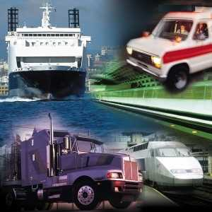

Gestionar y comercializar el servicio de transporte de mercancías y viajeros de acuerdo con especificaciones recibidas y organizar y planificar la explotación de las operaciones terrestres en el ámbito nacional e internacional y en el marco de los objetivos y procesos establecidos. Este técnico actuará, en todo caso, bajo la supervisión de Licenciados y Diplomados.

- Organización del servicio de transporte
- Almacenaje de productos
- Lengua extranjera: inglés
- Aplicaciones informáticas de propósito general
- Relaciones en el entorno de trabajo
- Formación y Orientación laboral
- Gestión administrativa de transporte
- Planificación y Gestión de la explotación del transporte terrestre
- Comercialización del servicio de transporte
- Gestión administrativa del comercio internacional
- Formación en Centros de Trabajo
Puestos de trabajo más relavantes:
- Jefe de Tráfico y Jefe de circulación
- Transitarios
- Agente comercial
- Consignatario marítimo
- Jefe de administración en transporte terrestre, aéreo, marítimo, y/o multimodal
- Jefe de almacén
- Jefe de caja
- Empleado de atención al cliente
- Almacenista
- Empleado de agencias comerciales